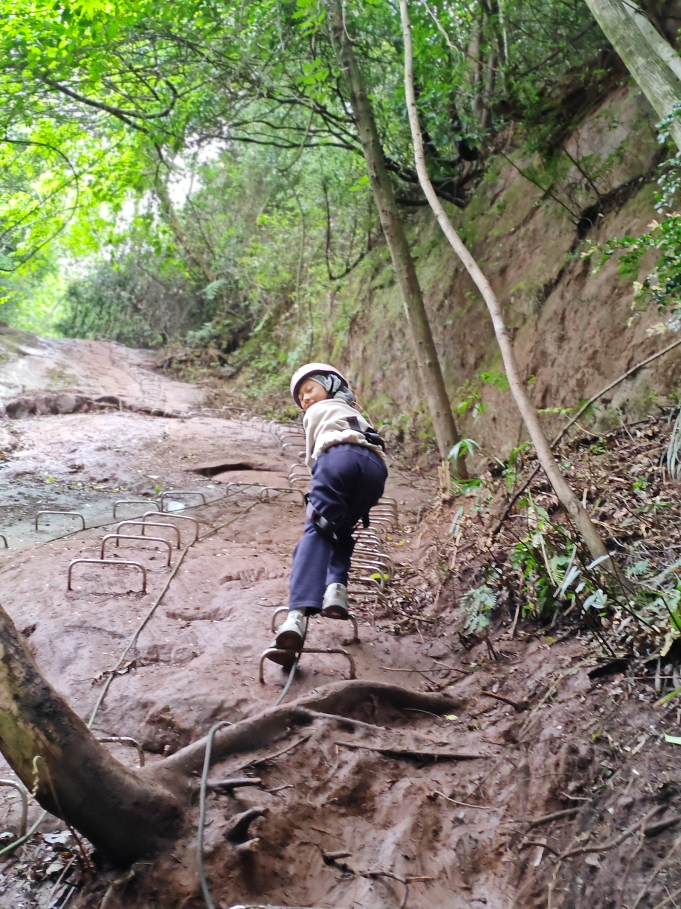

清平乐·夬石峡谷雨后攀登
雨余泥淖， 崖壁青云绕。 莫道山高行路峭， 踏破崎岖方好。 少年捷足争先， 一时笑越群贤。 汗湿衣衫何惧， 人生贵在登攀。
（今日赴大邑夬石峡谷穿越，雨后山路泥泞湿滑，几百米爬升步步艰辛。原以为难以为继，却在攀登中越走越勇。沐沐一马当先，接连超越数支小队，一小时登顶，连工作人员都称赞不已。下山时全身湿透，疲累远超三公里奔跑，却也豁然懂得：人生亦如登山，看似艰难险阻，只要肯迈步向上，终能抵达高处，别有一番畅快天地。）

2026-04-06
清平乐·夬石峡谷雨后攀登
雨余泥淖， 崖壁青云绕。 莫道山高行路峭， 踏破崎岖方好。 少年捷足争先， 一时笑越群贤。 汗湿衣衫何惧， 人生贵在登攀。
（今日赴大邑夬石峡谷穿越，雨后山路泥泞湿滑，几百米爬升步步艰辛。原以为难以为继，却在攀登中越走越勇。沐沐一马当先，接连超越数支小队，一小时登顶，连工作人员都称赞不已。下山时全身湿透，疲累远超三公里奔跑，却也豁然懂得：人生亦如登山，看似艰难险阻，只要肯迈步向上，终能抵达高处，别有一番畅快天地。）
